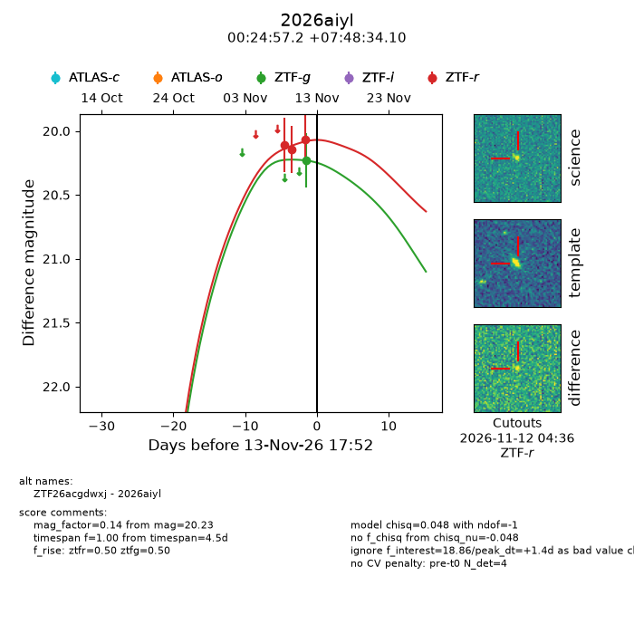
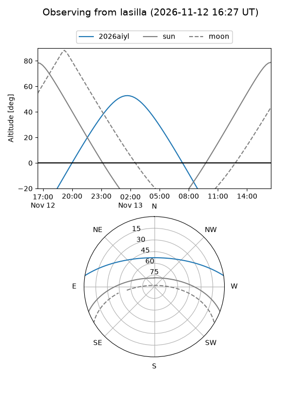
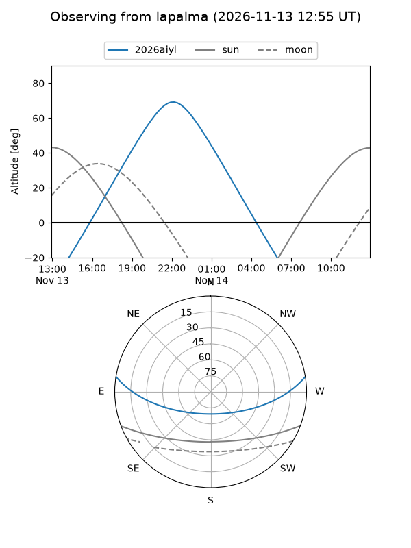
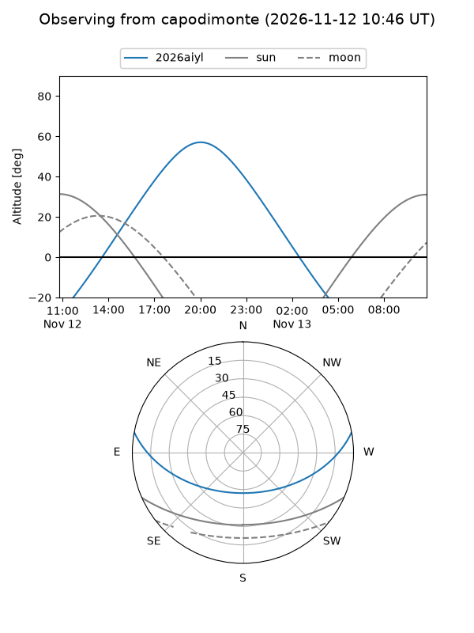
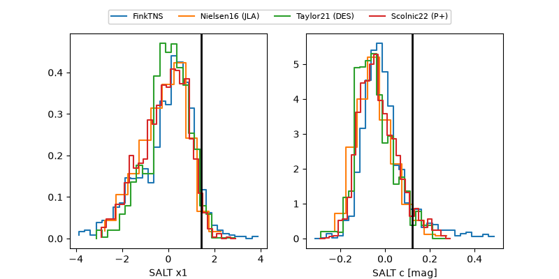

2026aiyl
Target 2026aiyl at 2026-11-13 17:58
Aliases and brokers:
FINK-ZTF: ztf.fink-portal.org/ZTF26acgdwxj
Lasair-ZTF: lasair-ztf.lsst.ac.uk/objects/ZTF26acgdwxj
ALeRCE-ZTF: alerce.online/object/ZTF26acgdwxj
YSE-PZ: ziggy.ucolick.org/yse/transient_detail/2026aiyl
TNS name: wis-tns.org/object/2026aiyl
Direct TNS query: direct search
alt names
ZTF26acgdwxj (ztf,fink_ztf)
2026aiyl (tns,yse)
Coordinates:
equatorial (ra, dec) = 6.2382,+7.80947
equatorial (HMS+DMS) = 00:24:57.18,+07:48:34.10
galactic (l, b) = (111.5928,-54.47814)
Flags:
peak dt: +1.4
Photometry:
last ztfg=20.23, ztfr=20.07
1 ztfg, 3 ztfr detections
Lightcurve

Visibility



Additional plots
